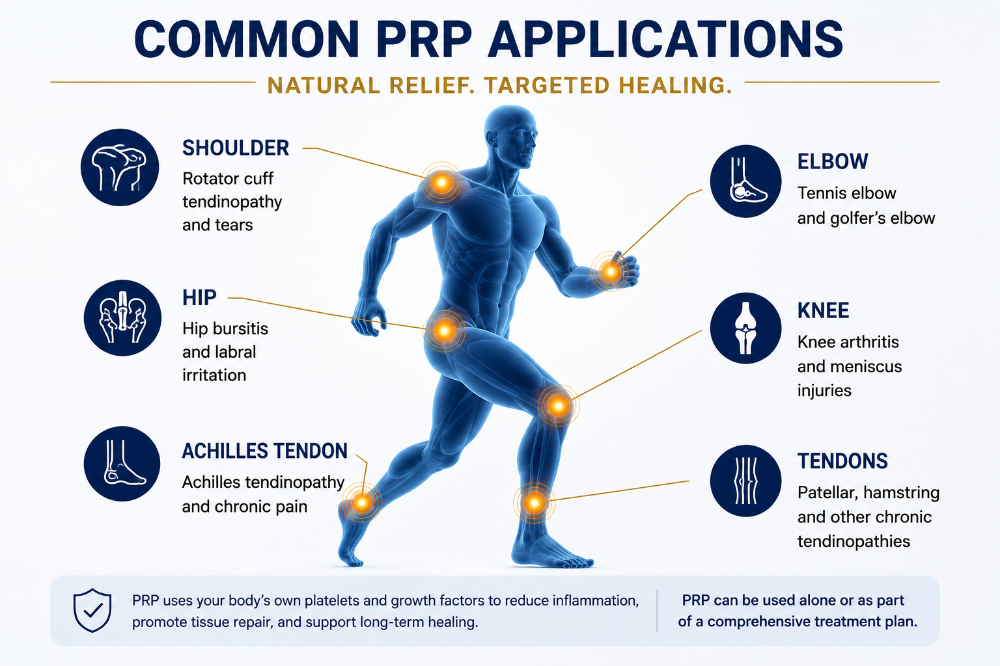
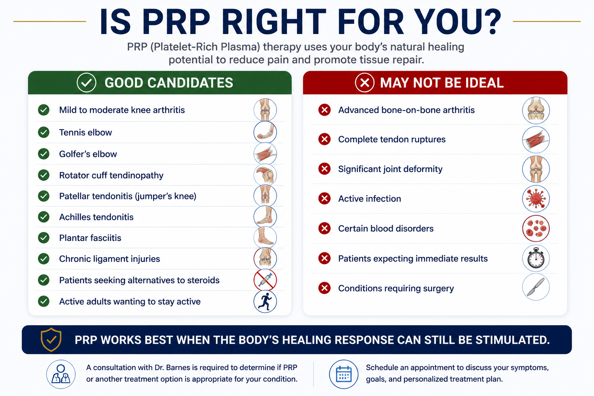
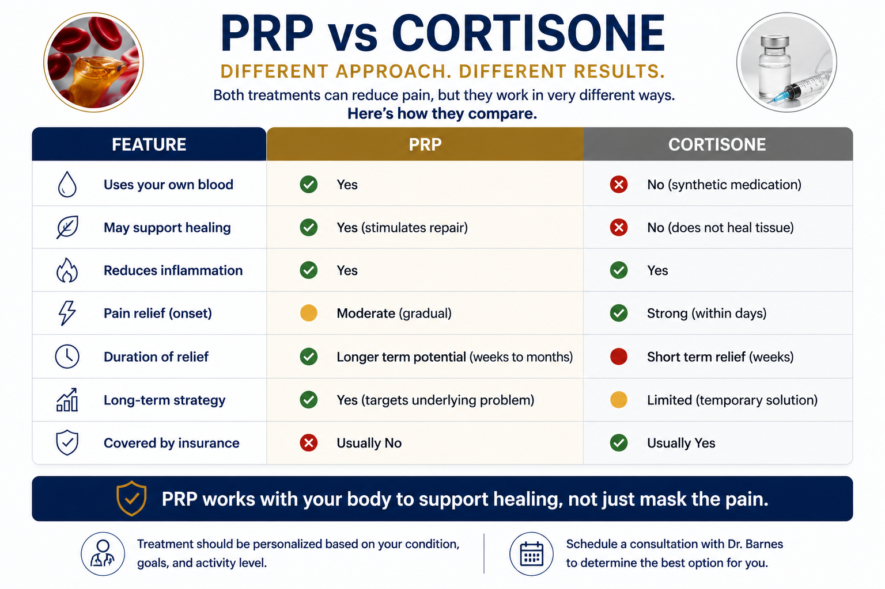
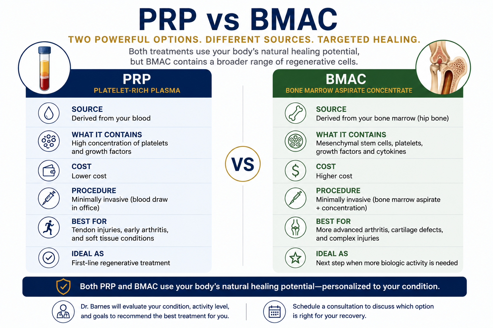

What are orthobiologics?
Orthobiologics are treatments derived from blood, bone marrow, or other biologic sources. The goal is to use a patient's own healing signals to influence pain, inflammation, and tissue recovery in carefully selected conditions.
PRP
Platelet-rich plasma is made from your own blood and concentrates platelets and signaling proteins that may support the healing response.
BMAC
Bone marrow aspirate concentrate is made from bone marrow, typically harvested from the pelvis, and contains marrow-derived cells, platelets, and signaling proteins.
Image-Guided Precision
When appropriate, ultrasound or fluoroscopic guidance can help place the biologic treatment more accurately into the target area.
Advanced Orthobiologics Training
Dr. Barnes has pursued dedicated post-graduate orthobiologics education through the Interventional Orthobiologics Foundation, including general session training, hip/knee injection training, and shoulder/elbow orthobiologics training.
Common PRP applications
PRP is most often discussed for selected tendon problems, soft-tissue injuries, and mild to moderate arthritis. It is not appropriate for every diagnosis, and the first step is confirming the real source of pain.
- Rotator cuff tendinopathy or partial-thickness tendon disease
- Tennis elbow, golfer's elbow, Achilles or patellar tendinopathy
- Selected knee, hip, shoulder, hand, or ankle arthritis
- Patients trying to stay active while avoiding or delaying more invasive treatments when appropriate


How PRP treatment works
PRP starts with a blood draw. The sample is processed to separate and concentrate platelets. The PRP is then injected into the targeted joint, tendon, or soft tissue area when appropriate.
- Outpatient procedure in most cases
- Often paired with activity modification or rehabilitation
- Usually gradual improvement over weeks to months when successful
- May require more than one treatment depending on the diagnosis and response
Is PRP right for you?
The right candidate depends on diagnosis, imaging, severity, prior treatment, medications, and goals. PRP may be reasonable for some patients and a poor choice for others.
- Potential candidates: chronic tendon pain, mild to moderate arthritis, active adults seeking non-surgical options
- Less ideal: advanced arthritis, complete tendon ruptures, major deformity, infection, or conditions requiring surgery
- Expectations matter: PRP is not immediate and not guaranteed


PRP vs cortisone
Cortisone injections may reduce inflammation quickly and are often covered by insurance. PRP is usually self-pay and is intended to support a longer-term biologic response rather than provide immediate numbing or steroid effect.
- Cortisone: often faster short-term relief
- PRP: may be considered when tissue health and longer-term strategy matter
- The best option depends on the condition, timing, tissue quality, and your goals
When BMAC enters the discussion
BMAC is more involved than PRP because it requires harvesting bone marrow, usually from the pelvis. It may be discussed for selected arthritis, cartilage, tendon, or biologic augmentation situations, but should not be marketed as a guaranteed stem-cell cure.
- PRP: blood-derived, generally simpler, often a starting point
- BMAC: bone marrow-derived, more involved, selected cases only
- Both require realistic expectations and careful diagnosis

Insurance and cost expectations
Most insurance plans do not routinely cover PRP or BMAC for many orthopedic uses. Many plans consider these treatments investigational or non-covered. Patients should expect that orthobiologic treatment may be self-pay unless their plan specifically states otherwise.
Because cost matters, Dr. Barnes' goal is to be direct about whether a biologic treatment is reasonable, whether the evidence supports trying it, and whether a standard treatment may be a better value.
Orthobiologics FAQ
Common questions patients ask about PRP, BMAC, medications, expectations, and safety.
What is PRP?
PRP stands for platelet-rich plasma. A small sample of blood is drawn and processed to concentrate platelets and growth factors. The PRP is then injected into a targeted area such as a joint, tendon, or soft tissue structure when appropriate.
What is BMAC?
BMAC stands for bone marrow aspirate concentrate. Bone marrow is usually taken from the pelvis and processed to concentrate marrow-derived cells, platelets, and signaling proteins. It is more involved than PRP and should be used selectively.
Is this the same as stem cell therapy?
Not exactly. BMAC contains a small number of marrow-derived cells along with many other biologic factors. It should not be described as a guaranteed stem-cell cure or as a treatment that regrows a normal joint.
Does insurance cover PRP or BMAC?
Often no. Many insurance plans consider PRP and BMAC investigational or non-covered for orthopedic uses. Patients should expect that these treatments may be self-pay unless their plan states otherwise.
Do I need to stop NSAIDs?
Many orthobiologic protocols recommend an NSAID holiday because anti-inflammatory medications may blunt the desired biologic inflammatory response. Dr. Barnes commonly advises avoiding NSAIDs for approximately 2 weeks before and 2 weeks after treatment unless another physician has specifically instructed you to continue them.
What about blood thinners or anticoagulants?
Blood thinners and anticoagulants require individualized planning around a blood draw or bone marrow harvest. Do not stop anticoagulants on your own. Any medication holiday must be coordinated with the prescribing physician and balanced against clotting or cardiovascular risk.
How long does it take to work?
Improvement, when it occurs, is usually gradual. Some patients notice changes over weeks, while others may take several months. Some patients do not improve enough to consider the treatment successful.
Can PRP or BMAC help me avoid surgery?
Sometimes these treatments may delay or reduce the need for surgery, but not always. If there is advanced arthritis, severe deformity, instability, or a major tendon tear, surgery may still be the most predictable option.
Are PRP and BMAC safe?
Because PRP and BMAC are made from your own blood or marrow, allergic reaction risk is generally low. However, any injection or aspiration can cause soreness, bleeding, infection, nerve irritation, flare reaction, or failure to improve symptoms.
Do I need imaging guidance?
For many injections, ultrasound or fluoroscopic guidance can improve accuracy. Dr. Barnes will discuss whether image guidance is appropriate for your specific condition.
Considering PRP or BMAC?
Schedule an orthopedic evaluation to clarify your diagnosis and decide whether orthobiologics make sense for your goals.